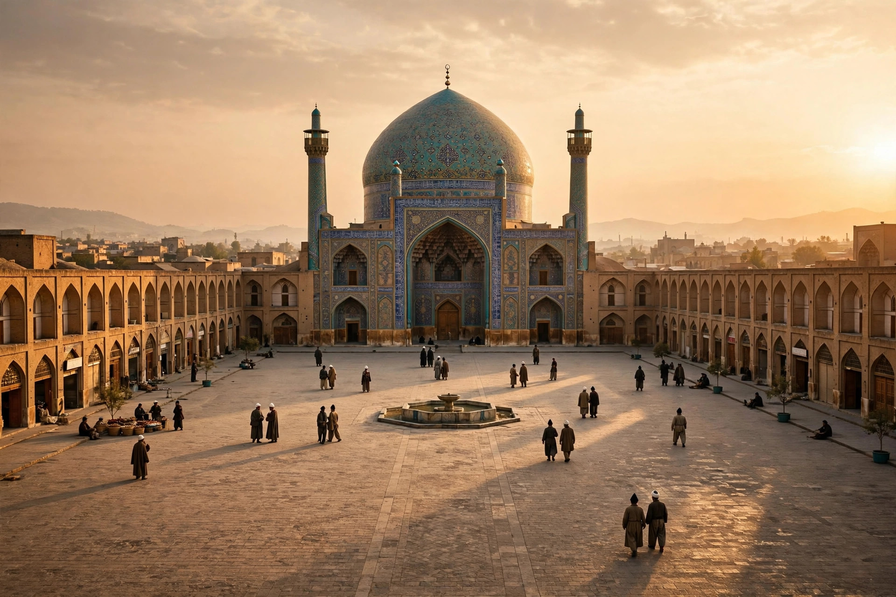

| Isfahan | |
|---|---|
 | |
| Country | Iran |
| Province | Isfahan Province |
| Population | c. 2.1 million (city, 2016 census); metro c. 3.9–4.9 million |
| Elevation | c. 1,574 m (5,164 ft) |
| River | Zayandeh River |
| Known for | Safavid capital; Persian architecture; handicrafts and carpets |
Isfahan (Persian: اصفهان, Esfahān) is a city in central Iran, about 340 kilometres south of Tehran, and the capital of Isfahan Province. One of Iran's largest cities and its third most populous, it was twice the capital of the Persian Empire — under the Seljuks in the 11th century and, most gloriously, under the Safavids from 1598 — and is celebrated for its Islamic architecture, tree-lined boulevards, covered bridges, and palaces. The Persian proverb Esfahān nesf-e jahān — "Isfahan is half the world" — captures its fame.
The city, known in antiquity as Aspadana, stood on the routes between Mesopotamia and the Iranian plateau and passed through Parthian and Sasanian hands before the Muslim conquest of the 7th century. Under the Buyids and then the Seljuk sultans — Malik-Shah made it his capital in the 11th century — Isfahan flourished; the astronomer-poet Omar Khayyam worked at its observatory. Timur sacked the city in 1387 with great slaughter, but it recovered, and in 1598 Shah Abbas I made it the capital of Safavid Persia. Abbas rebuilt Isfahan on a grand plan: the vast Naqsh-e Jahan Square, the Shah Mosque and Sheikh Lotfollah Mosque, the Ali Qapu palace, the Chehel Sotun pavilion, the great bazaar, and the tree-lined Chaharbagh avenue. He resettled Armenian merchants from Julfa in the suburb of New Julfa, with its own churches including Vank Cathedral, and made the city a hub of the silk trade, visited and described admiringly by European travellers. The Safavid era ended in catastrophe: in 1722 Afghan rebels besieged Isfahan into starvation and deposed the dynasty. The city declined under later dynasties but remained a major commercial and religious centre.
Naqsh-e Jahan Square (Imam Square), one of the largest city squares in the world, and the Masjed-e Jameh (Jameh Mosque) — a palimpsest of a thousand years of Islamic architecture — are UNESCO World Heritage Sites. The Zayandeh River is spanned by historic bridges, notably the Si-o-se-pol (Bridge of Thirty-Three Arches) and the Khaju Bridge, both Safavid. Isfahan is famed for its handicrafts: hand-woven carpets, miniature painting, metalwork (qalamzani), enamel (minakari), and turquoise inlay, and for the sweet gaz, a nougat of pistachio and tamarisk manna.
Today Isfahan is a major industrial centre — steel, textiles, oil refining, and handicrafts — and hosts important military and nuclear-related facilities, including a uranium conversion plant. Its universities, among them the University of Isfahan and Isfahan University of Technology, are among Iran's leading institutions. The drying of the Zayandeh River in recent decades, caused by drought and upstream diversion, has become a symbol of Iran's water crisis.
See also: Shah Abbas I · Safavid dynasty · Battle of Chaldiran · Naqsh-e Jahan Square